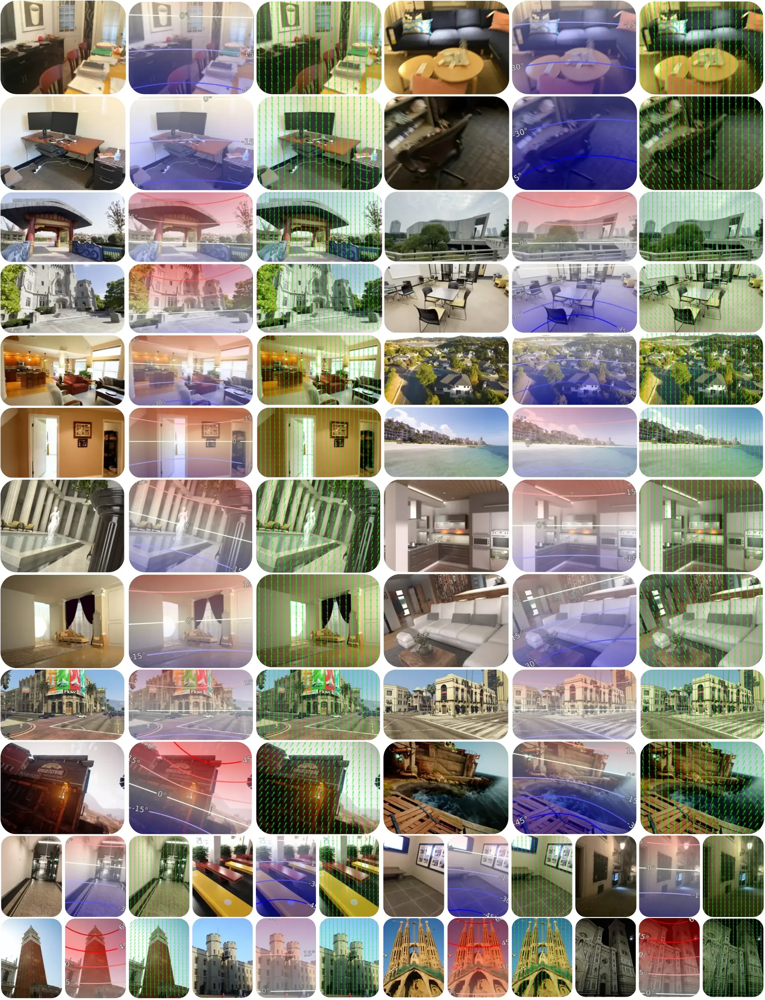
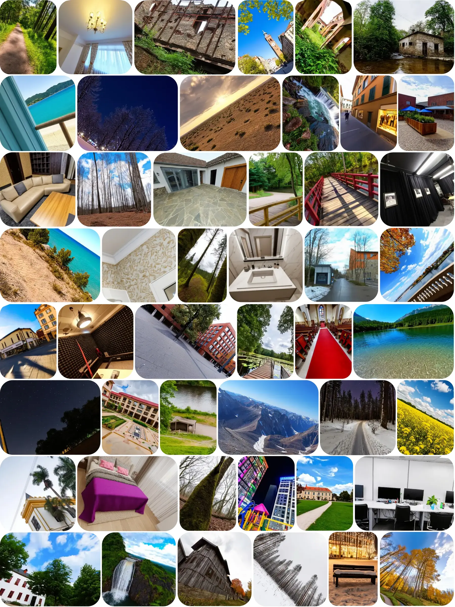
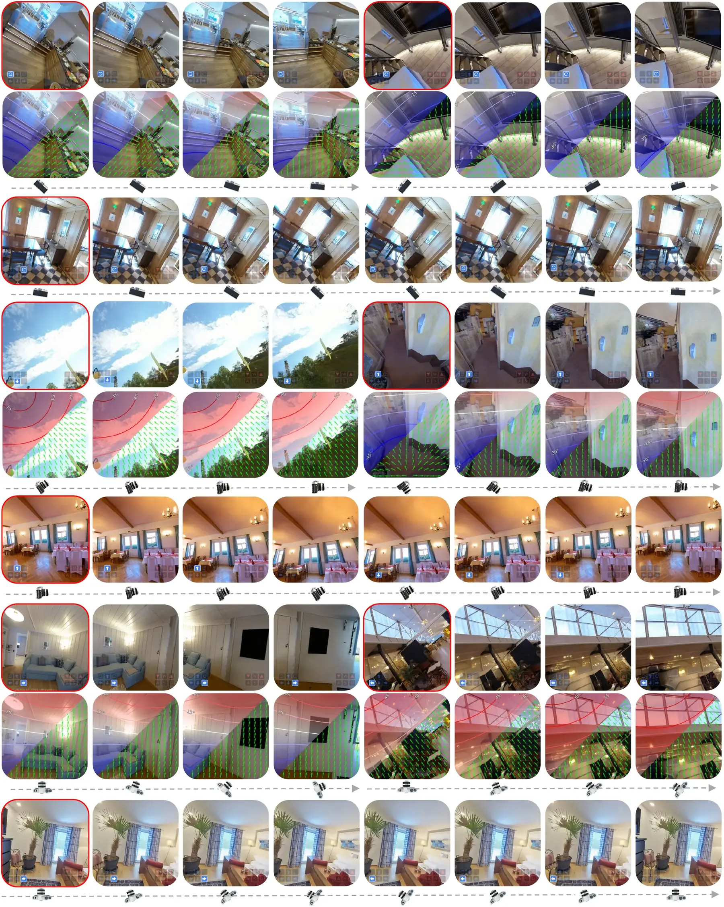
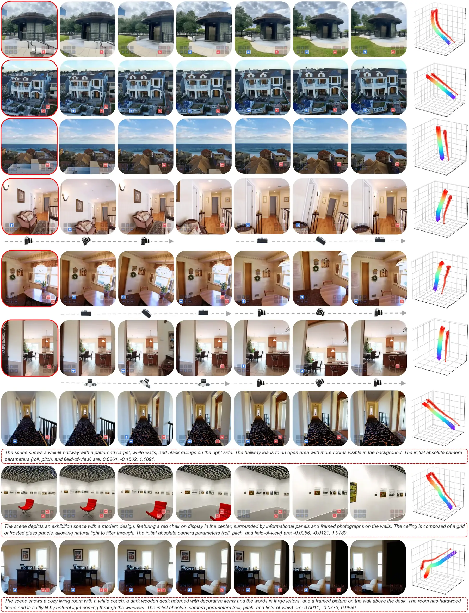
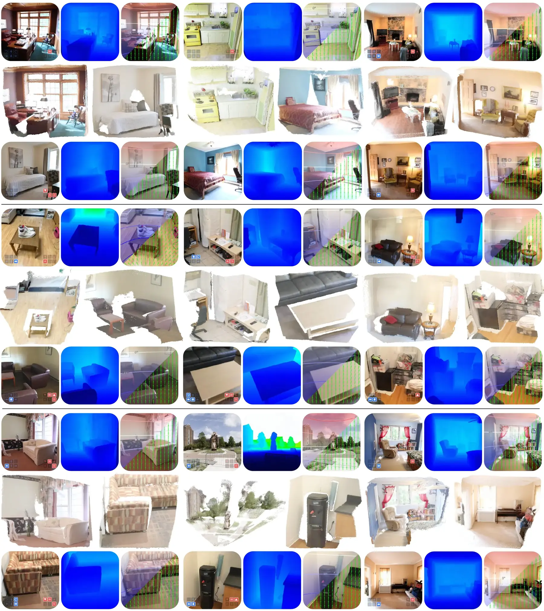

Puffin-World
Supplementary Results
More qualitative results across camera-to-world understanding, camera-controllable generation, and native 3D world modeling.
Figure 12 · Camera-to-World Understanding
Perspective fields across diverse datasets
Puffin-World predicts roll, pitch, and vertical field of view from each image and converts them into latitude maps and gravity fields. The results remain stable across indoor, outdoor, synthetic, and real-world scenes.

Figure 13 · Camera-Controllable Generation
Free-viewpoint simulation across scenes
Explicit camera conditions produce visible yet physically plausible changes in viewpoint, horizon, and spatial composition while preserving realistic appearance and prompt consistency.

Figure 14 · Rotation Control
Explicit roll, pitch, and yaw trajectories
Puffin-World follows large rotational controls along both single-pass and recursive generation paths while retaining the scene content and a coherent gravity-aligned physical frame.

Figure 15 · 3D World Generation
Long trajectories and compound camera actions
Additional examples cover long-horizon motion, large viewpoint changes, and combined camera actions. Generated views preserve semantic content and coherent spatial structure across extended trajectories.

Figure 16 · Native 3D World States
Appearance, geometry, physics, and reconstruction
Puffin-World jointly predicts visual appearance, depth-based geometry, and gravity-aware physics. The generated observations can then be consolidated into clear and spatially coherent 3D reconstructions.

Puffin-World
Return to the main project page
Explore the unified framework, interactive 3D viewer, quantitative evaluation, datasets, code, and models.
Back to Puffin-World